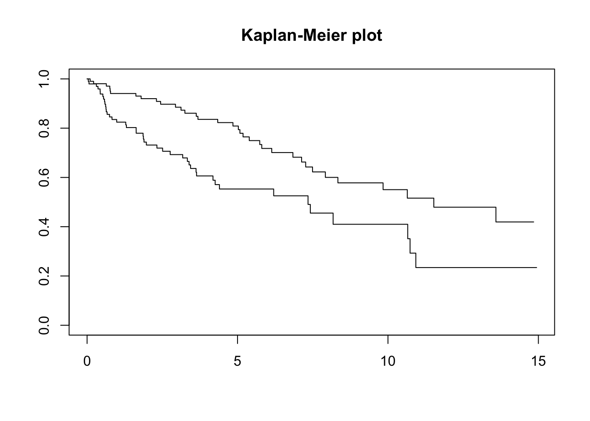

Bayesian analysis faces non-trivial mathematical problems, for example, solution of integrals for posterior summaries. Likely, the most popular and convenient way to approximate complex integrals is to use Markov Chain Monte Carlo (MCMC) algorithms. The Bayesian Inference Using Gibbs Sampling (BUGS) software introduced in 1989 was probably one of the first software for that purpose. Since then, other software and approaches emerged allowing an accessible (for example, as R package) and user-friendly (for example, using specific syntax) for researchers. In this section we provide an overview of available statistical software for Bayesian analysis.
5.1 Available software
5.1.1 BUGS
BUGS is “Bayesian Inference Using Gibbs Sampling”. BUGS used a Gibbs Sampler or the Metropolis-Hastings algorithm for the simulation of posterior distributions and was likely the first accessible approach to Bayesian simulations for researchers. While WinBUGS was used in Windows systems, OpenBUGS was for Linux systems. BUGS is neither further developed nor maintained anymore.
5.1.2 INLA
INLA is “Integrated Nested Laplace Approximation” (https://www.r-inla.org/). INLA uses latent Gaussian models for approximate Bayesian inference. INLA is an alternative to MCMC. Because of it’s approximation approach it is much faster than MCMC.
INLA interfaces with R but is not on CRAN. It can be manually installed as described on https://www.r-inla.org/.
5.1.3 JAGS
JAGS is “Just Another Gibbs Sampler” written in C++. JAGS is a dialect of the BUGS language. JAGS interfaces with R using the package rjags.
5.1.4 Stan
“Stan is a state-of-the-art platform for statistical modeling and high-performance statistical computation.” (https://mc-stan.org/) It uses a probabilistic programming language using MCMC sampling, approximate Bayesian inference and penalized maximum likelihood estimation.
STAN interfaces with R using the package rstan. Regression approaches are implemented in the packages rstanarm and brms.
5.2 Evaluation
We evaluated point estimates, uncertainty intervals and computational time of the above mentioned software approaches using simulated survival data. We assumed for 200 observations an exponential time to event assuming a hazard ratio of 0.6.
# Set significance levelalpha <-0.1# Kaplan-Meiermod_km <-survfit(Surv(time, event) ~ rando, data=data, conf.int =1- alpha)plot(mod_km, main ="Kaplan-Meier plot")

5.2.1 Poisson count process: Frequentist approach
We model the data in small pieces of follow-up time with a Poisson regression with offset, that is, we count the number of events in small follow-up time windows (i.e. event rate): A discrete Poisson process.
Show R code
# Split data set into small time windowsdata_split <-survSplit(Surv(time, event) ~., data=data, cut=seq(0, max(data$time), 0.5))data_split$fup <- data_split$time-data_split$tstart# Save spline and boundary knots informationspline_info <-bs(data_split$time, df =3)boundary_knots <-attr(spline_info, "Boundary.knots")# Attach splines to datasetdata_split$spline_1 <- spline_info[,1]data_split$spline_2 <- spline_info[,2]data_split$spline_3 <- spline_info[,3]# Start computational timestart_freq <-Sys.time()# Piecewise exponential modelmod <-glm(event~rando+spline_1+spline_2+spline_3+ spline_1:rando+spline_2:rando+spline_3:rando+offset(log(fup)), data=data_split, family=poisson())# End computational timeend_freq <-Sys.time()# Computational time in secondstime_freq <-difftime(end_freq, start_freq, units ="secs")
Estimate CI low CI high
0.491 0.267 0.714
Columns: estimate, conf.low, conf.high
5.2.2 Bayesian modelling: Priors
In a Bayesian setting one defines prior distributions on the unknown parameters. In the above used Poisson regression model these are priors on
the log baseline hazard (“Intercept”),
the fixed effect parameters (on log scale) which includes at least a time variable (likely modelled in non-linear way) and a group variable.
In the following we set the prior distribution of all above mentioned parameters to a centered Gaussian distribution with variance 10 (informative prior).
5.2.3 INLA
In INLA the priors can be specified via the ‘control.fixed’ specification. Important: The scale parameter is expressed as a precision parameter.
Show R code
# Define priorsinla_priors <-list(mean.intercept=0, prec.intercept=1/10, mean=0, prec=1/10)# Start computational timestart_inla <-Sys.time()mod_inla <-inla(event~rando+spline_1+spline_2+spline_3+ spline_1:rando+spline_2:rando+spline_3:rando+offset(log(fup)), data=data_split, family="poisson", control.fixed=inla_priors,control.compute=list(config =TRUE, return.marginals.predictor = T) )# End computational timeend_inla <-Sys.time()# Computational time in secondstime_inla <-difftime(end_inla, start_inla, units ="secs")
5.2.4 Stan
In Stan the priors can be specified via the ‘prior’ specification. Important: The scale parameter is expressed as standard deviation.
Show R code
### Define priorsprior_brm <-c(prior_string("normal(0,sqrt(10))", class ="b", coef ="rando"),prior_string("normal(0,sqrt(10))", class ="b", coef ="spline_1"),prior_string("normal(0,sqrt(10))", class ="b", coef ="spline_2"),prior_string("normal(0,sqrt(10))", class ="b", coef ="spline_3"),prior_string("normal(0,sqrt(10))", class ="b", coef ="rando:spline_1"),prior_string("normal(0,sqrt(10))", class ="b", coef ="rando:spline_2"),prior_string("normal(0,sqrt(10))", class ="b", coef ="rando:spline_3"),prior_string("normal(0,sqrt(10))", class ="Intercept"))# Seedseed <-1# Start computational timestart_brm <-Sys.time()mod_brm <-brm(event ~ rando+spline_1+spline_2+spline_3+ spline_1:rando+spline_2:rando+spline_3:rando+offset(log(fup)), data=data_split, family=poisson(), prior = prior_brm, seed=seed, silent=2 , refresh =0)# End computational timeend_brm <-Sys.time()# Computational time in secondstime_brm <-difftime(end_brm, start_brm, units ="secs")# Summarysummary_brm <-summary(mod_brm)# Start computational timestart_rstanarm <-Sys.time()mod_rstanarm <-stan_glm(event ~ rando+spline_1+spline_2+spline_3+ spline_1:rando+spline_2:rando+spline_3:rando+offset(log(fup)), data=data_split, family=poisson(),prior_intercept =normal(0, sqrt(10)),prior =normal(0, sqrt(10)),seed=seed,refresh =0)# End computational timeend_rstanarm <-Sys.time()# Computational time in secondstime_rstanarm <-difftime(end_rstanarm, start_rstanarm, units ="secs")# Summarysummary_rstanarm <- mod_rstanarm$stan_summary
5.2.5 JAGS
In JAGS the priors can be specified via the ‘prior’ specification. Important: The scale parameter is expressed as precision parameter.
We conclude that point estimates and credible intervals between the Bayesian software approaches are comparable. As expected, INLA outperforms the other Bayesian software approaches but only provides an approximation to the posterior distributions. Among the MCMC approaches, rstanarm reveals the best computational time.